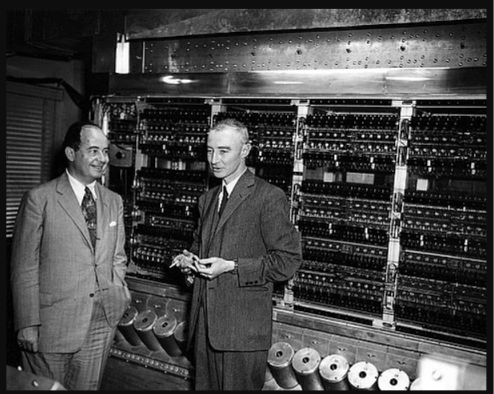
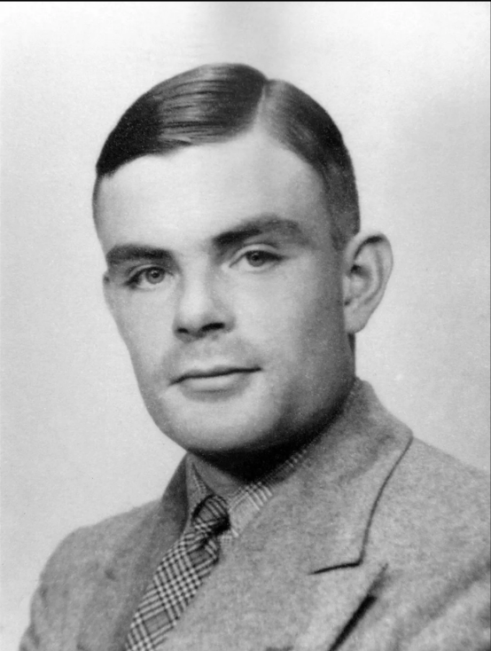
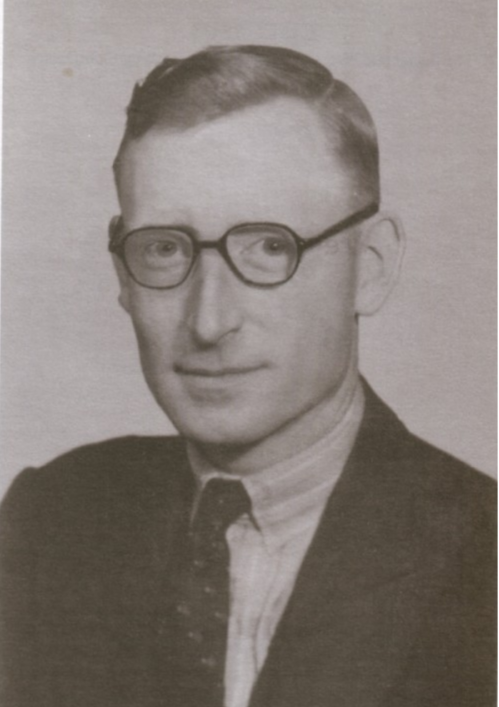
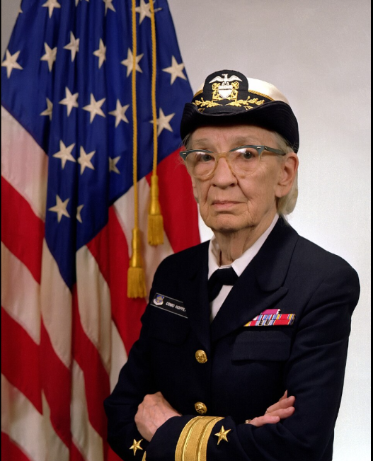

Resumo
Este artigo apresenta uma revisão bibliográfica narrativa de quatro trabalhos sobre a história da computação na década de 1940: uma resenha do volume sobre o Colossus e os computadores de criptoanálise de Bletchley Park, um artigo sobre a instalação de computação de Los Alamos durante o Projeto Manhattan, um artigo sobre a depuração do ENIAC e uma resenha do volume sobre o Automatic Computing Engine (ACE) de Alan Turing. Os trabalhos são comparados segundo três eixos: a influência da demanda militar e do sigilo, as formas de programação e depuração de cada máquina e o caminho até o conceito de programa armazenado. A comparação sugere que esses sistemas, construídos sob pressão militar, já enfrentavam problemas que continuam centrais na engenharia de software, como concorrência, erros notacionais e a necessidade de testar antes da entrega, e que o trabalho de operadores, programadoras e engenheiros foi decisivo em cada caso.
Computação sob Pressão da Guerra
Colossus, Los Alamos, ENIAC e o ACE de Turing na origem do computador moderno
Por Rafael Nascimento Lopes — Universidade do Estado do Pará (UEPA), Parauapebas, PA
Entre 1939 e 1946, demandas militares de criptoanálise, de cálculo balístico e de projeto de armas nucleares financiaram e aceleraram o desenvolvimento de máquinas de cálculo que, poucos anos antes, existiam apenas como propostas de laboratório. Este artigo compara quatro frentes dessa história por três eixos: a influência da demanda militar e do sigilo, as formas de programação e depuração, e o caminho até o programa armazenado.
Clique em cada seção para ler. As perguntas do quiz abaixo são baseadas neste artigo.
1. O Colossus e a criptoanálise em Bletchley Park
O Colossus foi a máquina eletrônica de criptoanálise usada pela Grã-Bretanha contra a Tunny, o fluxo de dados cifrado pela máquina alemã Lorenz SZ40. Dois avanços matemáticos, de John Tiltman e William Tutte, abriram o caminho para a decifração; a máquina em si foi construída por Tommy Flowers e sua equipe no centro de pesquisa dos Correios, em Dollis Hill, e entregue a Bletchley Park em janeiro de 1944.
O sigilo foi central: os integrantes juraram não revelar o que fizeram, a existência do Colossus só foi reconhecida publicamente em 1975 e nenhum exemplar original sobreviveu. O sucesso da máquina incentivou Newman e Turing a construir computadores eletrônicos, entre eles o Pilot ACE e as máquinas de Manchester.
2. A instalação de computação de Los Alamos
Entre 1944 e 1946, Los Alamos reuniu calculadores humanos e máquinas de cartões perfurados da IBM para o Projeto Manhattan. O cálculo começou à mão, com esposas de integrantes do corpo técnico e depois membros do Corpo Auxiliar Feminino do Exército. Quando o método se mostrou insuficiente, as máquinas IBM chegaram, em 4 de abril de 1944.
Programar essas máquinas era decompor as equações em operações como somar, multiplicar e ordenar, produzindo fluxogramas e diagramas de fiação, com os cartões movidos à mão. Feynman organizou uma disputa entre calculadores humanos e máquinas: o grupo humano se cansou e as máquinas entregaram o resultado correto. Quando os operadores do Destacamento de Engenharia Especial souberam o que estavam calculando, encontraram formas de melhorar a eficiência. A maior herança, segundo Archer, foi a experiência da equipe: passaram por ali John Kemeny, Richard Hamming e Nicholas Metropolis.
3. A depuração do ENIAC
Apresentado ao público em fevereiro de 1946, o ENIAC foi construído na Universidade da Pensilvânia, sob a liderança de John Mauchly e J. Presper Eckert. Em vez de uma CPU, é um conjunto de unidades funcionais (20 acumuladores, multiplicador, divisor, tabelas de função e outros), e funciona como uma máquina de fluxo de dados, com paralelismo nas mãos do programador. A programação era física: chaves para as operações e cabos para o sequenciamento. As seis primeiras programadoras, antes calculadoras humanas, trabalharam a partir dos desenhos de engenharia.
Ao simular os exemplos do manual técnico, Stuart encontrou dois tipos de erro: os notacionais, como copiar errado um desenho ou atualizar um parâmetro em um lugar e esquecer o outro, e os de concorrência e temporização, como dois valores enviados ao mesmo tempo no mesmo canal. A máquina dispunha de três mecanismos de depuração familiares hoje: lâmpadas de néon mostrando os valores, modo de passo único e pontos de parada.
4. O ACE de Turing e o programa armazenado
Em 1945, Alan Turing elaborou o projeto do Automatic Computing Engine (ACE), baseado no princípio de controlar as operações da máquina por instruções codificadas armazenadas em sua memória. O modelo piloto executou seu primeiro programa em 10 de maio de 1950, e a versão de produção, o DEUCE, tornou-se um dos pilares da indústria britânica de computadores. Como em Los Alamos e no ENIAC, os engenheiros sofreram pressão para usar a máquina em computação séria antes de ela estar pronta.
5. Comparação e implicações para a engenharia de software
| Sistema | Contexto | Programação | Legado |
|---|---|---|---|
| Colossus (1944) | Criptoanálise da cifra Tunny | Máquina eletrônica para tarefa específica | Sigilo até 1975; estímulo a Newman e Turing |
| Los Alamos (1944–1946) | Massa crítica e implosão | Máquinas IBM, fluxogramas e cartões à mão | Formação de pessoal; MANIAC; Laboratório Watson |
| ENIAC (1945–1955) | Tabelas balísticas e outras aplicações | Chaves e cabos; fluxo de dados | Erros notacionais e de concorrência; depuração por passo único |
| ACE (1945; Pilot ACE 1950) | Projeto de Turing no National Physical Laboratory | Programa armazenado na memória | DEUCE e a indústria britânica |
Nas quatro frentes, a guerra definiu o problema e o prazo, e o sigilo teve efeitos duradouros. As formas de programar evoluíram de procedimentos manuais e fiações para o programa armazenado, mas a tarefa de verificar a correção nunca desapareceu. Os erros notacionais, a concorrência e os testes insuficientes, já presentes nos primeiros programas, continuam centrais na engenharia de software. Essas conexões são leituras interpretativas das fontes, não afirmações de todos os autores.
Principais Nomes

Alan Turing
Ver mais
Matemático britânico fundamental na quebra da máquina Enigma. Criou a "Máquina de Turing" e é considerado o pai da ciência da computação.

Tommy Flowers
Ver mais
Engenheiro dos correios britânicos que projetou e construiu o Colossus, máquina eletrônica de criptoanálise entregue a Bletchley Park em janeiro de 1944.

Grace Hopper
Ver mais
Pioneira da programação, trabalhou no computador Harvard Mark I e mais tarde desenvolveu o primeiro compilador para linguagens de programação.
Teste seus conhecimentos
Fontes e Referências
- Agar, J. (2006). Secret giants. Nature, 442:746.
- Anderson, D. (2008). Book review: Alan Turing's Automatic Computing Engine. History and Philosophy of Logic, 29(4):389–396.
- Archer, B. J. (2021). The Los Alamos computing facility during the Manhattan Project. Nuclear Technology, 207(sup1):S190–S203.
- Copeland, B. J., ed. (2005). Alan Turing's Automatic Computing Engine. Oxford University Press.
- Copeland, B. J., ed. (2006). Colossus: The Secrets of Bletchley Park's Codebreaking Computers. Oxford University Press.
- Kidwell, P. A. (2007). Colossus: The secrets of Bletchley Park's codebreaking computers (review). Technology and Culture.
- Stuart, B. L. (2018). Debugging the ENIAC. Proceedings of the IEEE, 106(12):2331–2345.